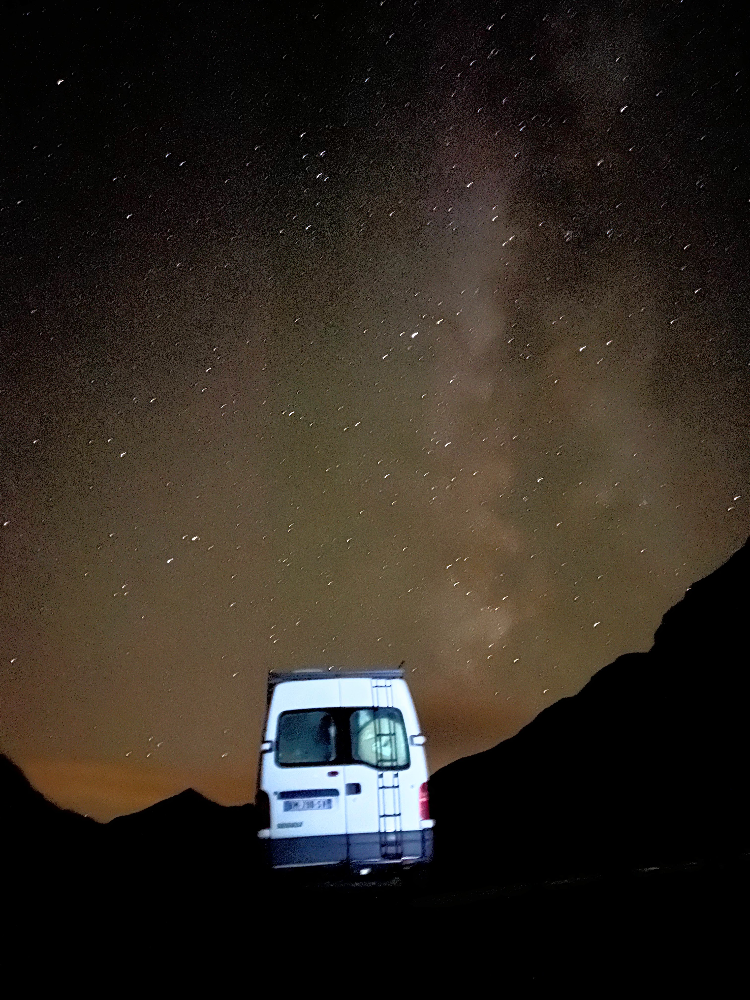

Santiaguito - Guatemala
Impressionant, indescriptible, éprouvant... Un des volcans les plus actifs d'Amérique Centralel
Impressionant, indescriptible, éprouvant... Un des volcans les plus actifs d'Amérique Centralel

Un des volcans les plus connus au monde, en éruption continue, à la forme parfaite.

Un cratère digne d'une autre planète, un lac acide aux couleurs époustouflantes.

Un volcan qui se mérite, en pleine jungle, aux émissions de vapeurs souffrées gigantesques.

Un cratère aux dimensions exceptionnelles, insaisissables, au fond rougeoyant.

Un des plus jeunes volcans d'Amérique, tout en contraste avec la jungle environnantes.

Assez proche de la capitale pour y aller en transport public, un géant du Costa Rica.

Un volcan mythique, à l'ascension technique et au sommet très très chaud.

Je suis Arno, ingénieur aérospatial de formation, passionné de nature et d'un nombre incalculable de sujets souvent liés aux sciences, amateurs de sport, d'aventure et d'insolite. Ce journal de bord à pour but de regrouper toutes mes activités, mes connaissances, mes rélfexions, mes photos, et partager ma passion. Vous trouverez plus d'information sur mon journal de bord en cliquant sur le gros bouton dessous !
PS : Pour le moment, le site est en développement. Créer du contenu prend du temps. Je commence par mettre la forme qui me plaît pour tout le contenu que je veux, puis je travaillerai le fond, avec humour et mise à jour. Les pages fonctionnelles sont notées d'un coeur.
Ici les liens des dernières publications, tout type confondu (randonnées, voyages, informations, articles, ...).

Octobre 2025 - Entre randonnées et via ferrata - 10 jours avex Thib.

Septembre 2025 - Trail de 30 kilomètres au départ des Granges d'Astau, jusqu'au fameux pic de Perdiguère.

Aout 2025 - Randonnée sur 2 jours avec bivouac au sommet, et ascension de 3 sommets Pyrénnéens mythiques de plus de 3000m.

Juin 2025 - Voyage de 10 jours en Norvège, sous le soleil (ou les nuages) de minuit.